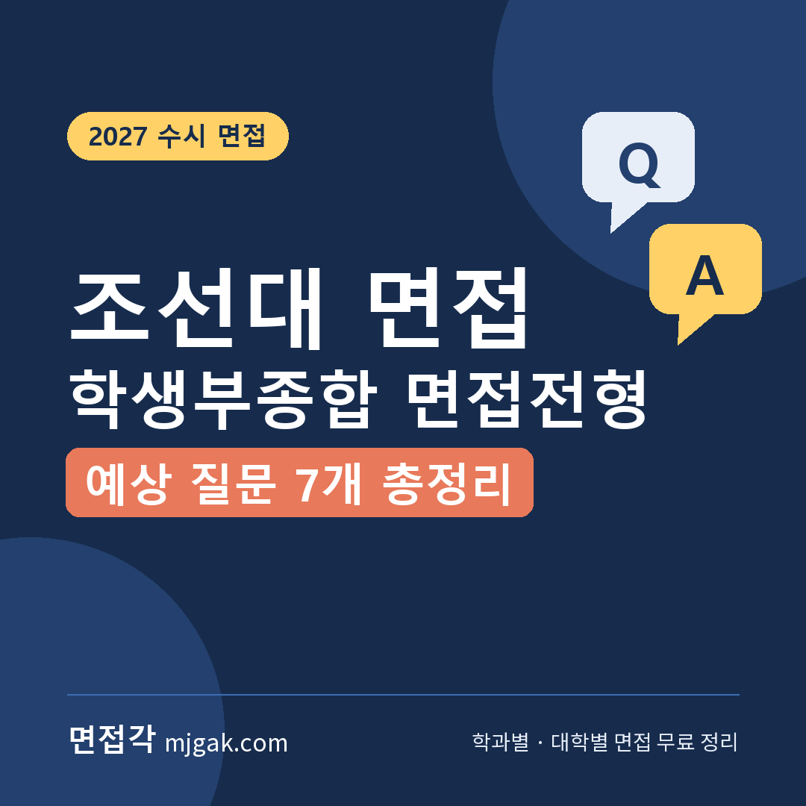
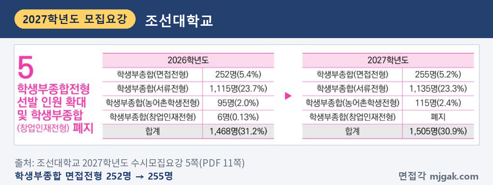
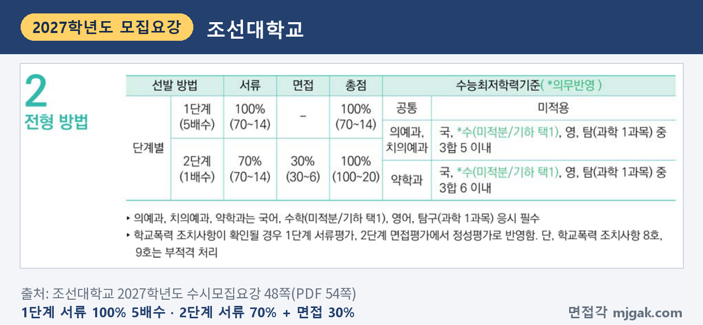
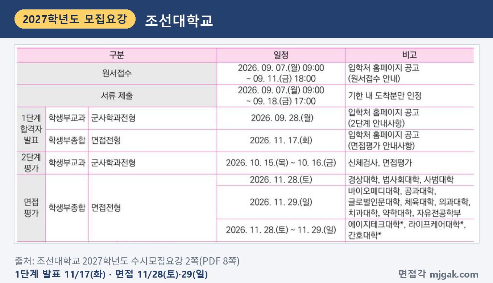
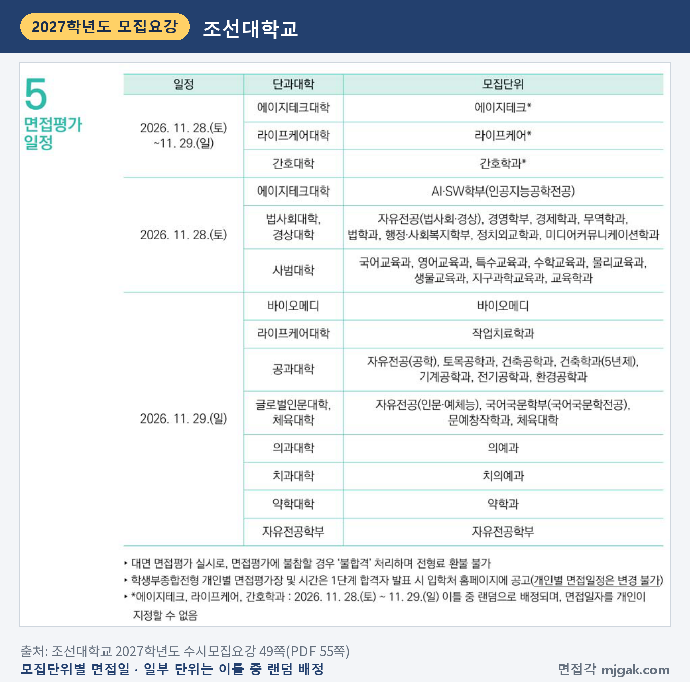
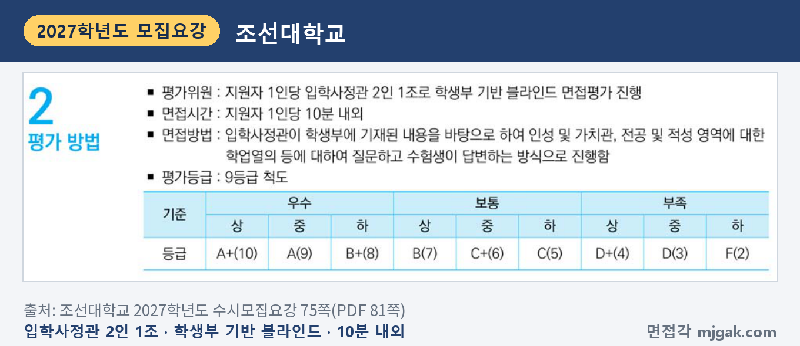
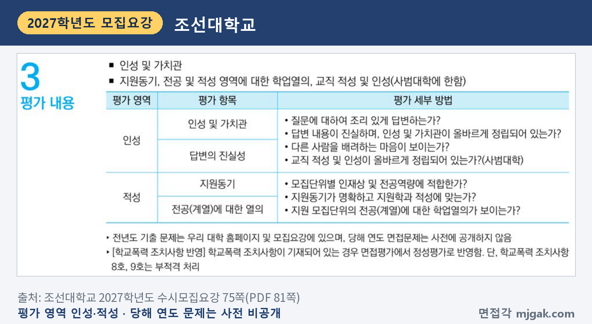
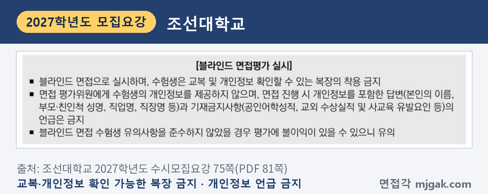
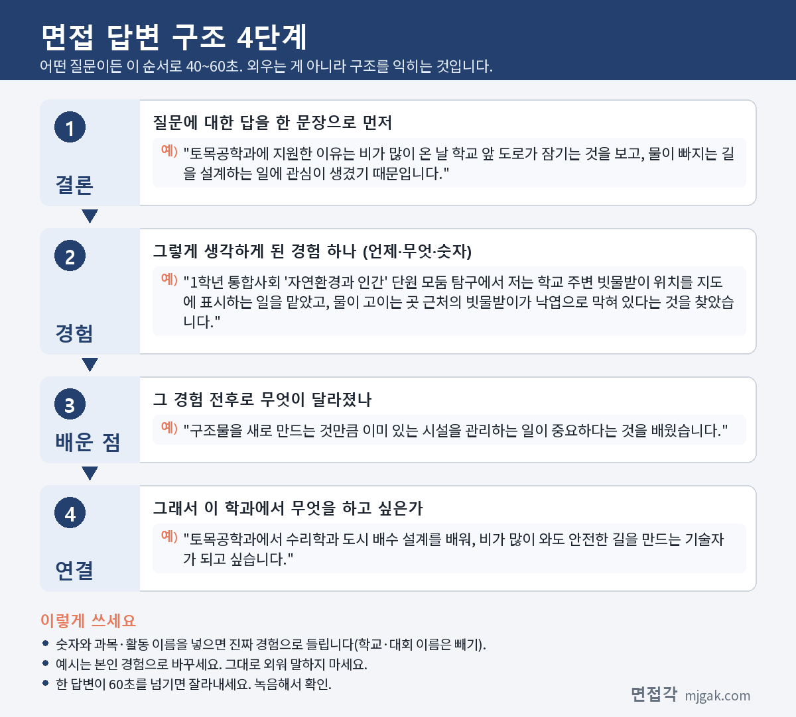

Ctrl+V (서식 유지됨)제목
본문 (이 영역 전체가 복사됩니다)
📷 여기에 이미지 넣기 — 썸네일 — thumb-chosun.png (대표 이미지로 지정)
조선대 학생부종합 면접전형에서 먼저 확인할 것은 내 모집단위의 면접 날짜입니다. 1단계 합격자 발표는 수능 이틀 전인 11월 17일(화)이고, 면접은 11월 28일(토)과 29일(일)에 모집단위별로 나뉩니다. 에이지테크·라이프케어·간호학과는 이틀 중 하루가 무작위로 배정되고 날짜를 바꿀 수 없습니다. 2단계는 서류 70%와 면접 30%를 합산하고, 면접은 입학사정관 2인 1조가 학생부에 적힌 내용을 바탕으로 묻는 10분 내외의 블라인드 면접입니다. 이 글은 조선대학교 2027학년도 수시모집요강으로 전형 방법, 일정, 면접 방식, 평가 항목에서 만든 예상 질문 7개, 준비 순서를 정리했습니다. 대학이 공개한 지난해 면접 문제는 이 글에 옮기지 않고 어디에 있는지만 안내합니다. 면접전형 지원자가 읽으시면 됩니다.
1. 면접전형, 2027학년도에는 어떻게 보나
학생부종합 면접전형은 255명을 뽑습니다. 2026학년도 252명에서 3명 늘었고, 학생부종합 창업인재전형은 폐지됐습니다(5쪽).
📷 여기에 이미지 넣기 — 캡처 1 — 조선대학교 2027학년도 수시모집요강 5쪽: chosun-2027-units.png
인원이 많은 모집단위는 라이프케어 38명, 에이지테크 18명, 간호학과 16명이고, 법학과·행정·사회복지학부·토목공학과·건축공학과·전기공학과가 각 9명, 스포츠산업학과·교육학과가 각 8명입니다. 의예과·치의예과·약학과는 각 6명입니다(8·9쪽). 지원 자격은 고등학교 졸업(예정)자 또는 같은 학력이 있다고 인정된 사람입니다(48쪽).
1단계는 서류 100%로 모집인원의 5배수를 뽑고, 2단계는 서류 70%와 면접 30%를 합산합니다. 수능최저학력기준은 공통으로 적용하지 않고, 의예과·치의예과·약학과만 있습니다. 학교폭력 조치사항은 1단계 서류평가와 2단계 면접평가에서 정성평가로 반영하고, 8호·9호는 부적격입니다(48쪽).
📷 여기에 이미지 넣기 — 캡처 2 — 조선대학교 2027학년도 수시모집요강 48쪽: chosun-2027-method.png
1단계 서류평가는 입학사정관 2인 1조가 블라인드 처리한 학교생활기록부로 진로역량 40%, 학업역량 40%, 공동체역량 20%를 평가합니다(74쪽). 최종 동점자는 면접평가 점수, 서류평가 총점, 1단계 진로역량·학업역량·공동체역량 점수 순으로 가립니다(19쪽).
2. 언제 보나: 11월 17일 발표, 11월 28일~29일 면접
- 11월 17일(화): 1단계 합격자 발표, 입학처 홈페이지 공고(면접평가 안내사항)
- 11월 19일(목): 수능(모집요강 일정표 밖의 일정)
- 11월 28일(토): AI·SW학부(인공지능공학전공), 법사회대학·경상대학, 사범대학
- 11월 29일(일): 바이오메디, 작업치료학과, 공과대학, 글로벌인문대학·체육대학, 의예과, 치의예과, 약학과, 자유전공학부
- 11월 28일(토)~29일(일) 중 하루: 에이지테크, 라이프케어, 간호학과(무작위 배정)
- 12월 18일(금): 합격자 발표, 12월 21일(월)~23일(수) 온라인 문서등록
모집단위별 날짜는 49쪽 표 기준이고, 발표·등록 일정은 2쪽 기준입니다. 2쪽 일정표에는 단과대학 단위로만 적혀 있어 AI·SW학부(인공지능공학전공, 11월 28일)와 작업치료학과(11월 29일)가 따로 보이지 않으니, 날짜는 49쪽 표로 확인하세요. 1단계 발표에서 면접까지 11~12일이고 그 사이에 수능이 있습니다(이 글에서 계산한 값). 개인별 면접장과 시간은 1단계 발표 때 함께 공고하고, 개인별 면접 일정은 바꿀 수 없습니다(49쪽).
📷 여기에 이미지 넣기 — 캡처 3 — 조선대학교 2027학년도 수시모집요강 2쪽: chosun-2027-schedule.png
📷 여기에 이미지 넣기 — 캡처 4 — 조선대학교 2027학년도 수시모집요강 49쪽: chosun-2027-date.png
3. 면접은 어떻게 보나
지원자 1명당 입학사정관 2인 1조가 학생부 기반 블라인드 면접을 하고, 시간은 10분 내외입니다. 입학사정관이 학생부에 기재된 내용을 바탕으로 인성 및 가치관, 전공 및 적성 영역에 대한 학업열의 등을 묻고 수험생이 답합니다. 평가는 A+(10)부터 F(2)까지 9등급 척도입니다(75쪽).
📷 여기에 이미지 넣기 — 캡처 5 — 조선대학교 2027학년도 수시모집요강 75쪽: chosun-2027-interview.png
평가 영역은 둘입니다. 인성(인성 및 가치관, 답변의 진실성)은 조리 있게 답하는지, 답변이 진실한지, 다른 사람을 배려하는 마음이 보이는지를 보고, 사범대학은 교직 적성 및 인성도 봅니다. 적성(지원동기, 전공(계열)에 대한 열의)은 모집단위별 인재상 및 전공역량에 적합한지, 지원동기가 명확한지, 전공에 대한 학업열의가 보이는지를 봅니다(75쪽). 영역별 반영 비율은 모집요강에 없습니다.
📷 여기에 이미지 넣기 — 캡처 6 — 조선대학교 2027학년도 수시모집요강 75쪽: chosun-2027-criteria.png
블라인드 면접이라 교복과 개인정보를 확인할 수 있는 복장은 입을 수 없습니다. 본인 이름, 부모·친인척 성명, 직업명, 직장명 같은 개인정보와 공인어학성적, 교외 수상실적, 사교육 유발요인도 말하면 안 되고, 지키지 않으면 평가에 불이익이 있을 수 있습니다(75쪽). 면접에 불참하면 불합격이고 전형료는 돌려받지 못합니다(49쪽).
📷 여기에 이미지 넣기 — 캡처 7 — 조선대학교 2027학년도 수시모집요강 75쪽: chosun-2027-blind.png
4. 지난해 면접 문제는 어디에 있나
모집요강 75쪽은 "전년도 기출 문제는 우리 대학 홈페이지 및 모집요강에 있으며, 당해 연도 면접문제는 사전에 공개하지 않음"이라고 안내합니다. 모집요강 88~90쪽에 「2026학년도 학생부종합전형 면접평가 문제」가 실려 있습니다(90쪽 머리글은 '2025학년도'로 적혀 있습니다). 88쪽은 이 문항들이 학생부 기반의 개인별 맞춤형 문항이라 학생별로 다를 수 있다고 안내합니다. 이 글에는 문항을 옮기지 않았으니, 조선대 입학처 홈페이지 수시 모집요강에서 직접 읽어 보세요. 지원 모집단위의 문항이 학생부의 어떤 기록에서 출발하는지를 보면 아래 예상 질문을 내 기록으로 바꾸기 쉽습니다.
5. 평가 항목에서 만든 예상 질문 7개와 답변법
아래 7개는 75쪽 평가 항목(인성 및 가치관, 답변의 진실성, 지원동기, 전공(계열)에 대한 열의)으로 만든 예상 질문이며 대학이 공개한 질문이 아닙니다. "○○"에는 내 학생부의 과목과 활동이 들어갑니다. 예시 답변은 모집단위를 바꿔 쓴 가상의 예시이니 본인 경험으로 바꾸세요.
▶ 질문 1. 우리 학과에 지원한 동기를 학생부 활동과 연결해 말해 보세요. (적성: 지원동기)
왜 묻나: '지원동기가 명확하고 지원학과 적성에 맞는가'와 연결한 질문입니다. 학생부의 장면으로 답해야 학생부 기반 면접과 맞습니다.
답변 구조: 동기 한 문장 → 관심을 확인한 학생부 장면 → 배운 점 → 학과에서 배울 것.
답변 예시 (토목공학과):
"토목공학과에 지원한 이유는 비가 많이 온 날 학교 앞 도로가 잠기는 것을 보고, 물이 빠지는 길을 설계하는 일에 관심이 생겼기 때문입니다. 1학년 통합사회 '자연환경과 인간' 단원 모둠 탐구에서 저는 학교 주변 빗물받이 위치를 지도에 표시하는 일을 맡았고, 물이 고이는 곳 근처의 빗물받이가 낙엽으로 막혀 있다는 것을 찾았습니다. 구조물을 새로 만드는 것만큼 이미 있는 시설을 관리하는 일이 중요하다는 것을 배웠습니다. 토목공학과에서 수리학과 도시 배수 설계를 배워, 비가 많이 와도 안전한 길을 만드는 기술자가 되고 싶습니다."
주의: "어릴 때부터", "전망이 좋아서"로 끝내지 마세요. 학년, 과목, 내가 맡은 일을 넣습니다.
▶ 질문 2. 학생부의 ○○ 활동에서 본인이 직접 한 일은 무엇인가요? (적성: 전공(계열)에 대한 열의)
왜 묻나: 학생부에 기재된 내용을 바탕으로 묻는 면접이라, 적힌 활동을 짚는 형태를 예상할 수 있습니다.
답변 구조: 활동 주제 → 내가 맡은 일 → 막힌 점과 해결 → 결과 → 전공과 연결.
답변 예시 (AI·SW학부 인공지능공학전공):
"정보 수업 모둠 과제로 학교 도서관 대출 기록을 정리해 학년별 추천 도서 목록을 만들었고, 저는 데이터 정리를 맡았습니다. 같은 책이 띄어쓰기와 부제 표기 차이로 서로 다른 책으로 세어져 순위가 틀어졌습니다. 그래서 제목 표기 규칙을 정해 다시 정리했더니 순위가 크게 바뀌었습니다. 결과는 데이터를 얼마나 깨끗하게 정리하느냐에 달려 있다는 것을 알았고, 인공지능이 배우는 데이터를 다루는 공부를 하고 싶어졌습니다."
주의: "저희 모둠은"으로 시작하면 내 역할이 흐려집니다. "저는 ○○을 맡았습니다"로 시작하세요.
▶ 질문 3. 지원 학과와 관련해 가장 깊이 공부한 과목 내용을 설명해 보세요. (적성: 전공(계열)에 대한 열의)
왜 묻나: '지원 모집단위의 전공(계열)에 대한 학업열의가 보이는가'와 연결한 질문입니다.
답변 구조: 과목과 주제 → 생긴 궁금증 → 더 찾아본 방법 → 알게 된 것과 학과 연결.
답변 예시 (간호학과):
"생명과학Ⅰ의 혈당량 조절을 가장 깊이 공부했습니다. 혈당이 높으면 이자에서 인슐린이, 낮으면 글루카곤이 분비된다고 배운 뒤, 당뇨가 있는 사람에게 규칙적인 식사를 강조하는 이유가 궁금했습니다. 도서관 책과 공공기관 건강 자료를 찾아보니, 혈당을 낮추는 약을 쓰는 사람이 식사를 거르면 저혈당이 올 수 있었습니다. 같은 지식도 환자 생활에 맞게 설명해야 한다는 것을 알았고, 간호학과에서 환자 교육을 제대로 배우고 싶습니다."
주의: 교과서 설명을 길게 하지 말고, 내가 궁금했던 것과 찾아본 과정에 시간을 쓰세요.
📷 여기에 이미지 넣기 — 이미지 1 — 제미나이 생성: 창밖으로 소나무와 먼 산 능선이 보이는 늦가을 캠퍼스 라운지에서 나무 다리 모형·노트북·청진기·색 점토·수학 교구 옆에서 답하는 학생(실사) / "제미나이 프롬프트 1" · gem-chosun-1.png
(AI로 만든 이미지로, 실제 캠퍼스와 다를 수 있습니다)
▶ 질문 4. 다른 사람을 배려했던 경험을 말해 보세요. (인성: 인성 및 가치관)
왜 묻나: 평가 세부 방법의 '다른 사람을 배려하는 마음이 보이는가'와 연결한 질문입니다.
답변 구조: 상황 → 상대에게 먼저 물어본 것 → 내가 한 일 → 결과 → 배운 점.
답변 예시 (작업치료학과):
"2학년 때 짝이 오른팔에 깁스를 해서 한 달 동안 필기를 함께 정리해 주었습니다. 그런데 친구가 가장 불편해한 것은 필기보다 급식 식판을 드는 일과 사물함 자물쇠를 여는 일이었습니다. 그래서 식판은 제가 들고, 담임 선생님께 말씀드려 사물함을 열쇠 없는 칸으로 바꿨습니다. 돕기 전에 상대의 하루를 먼저 물어야 한다는 것을 배웠고, 일상생활을 다시 해낼 수 있게 돕는 작업치료에 관심을 갖게 됐습니다."
주의: 내가 얼마나 착했는지보다 상대에게 무엇이 필요했는지를 중심에 두세요.
▶ 질문 5. 학생부의 ○○ 활동에서 아쉬웠던 점은 무엇인가요? (인성: 답변의 진실성)
왜 묻나: 평가 항목에 '답변의 진실성'이 있습니다. 학생부에 적힌 사실과 내 말이 맞아야 하고, 잘 안 된 부분도 솔직하게 말할 수 있어야 합니다.
답변 구조: 활동과 내 역할 → 아쉬웠던 점 → 그 뒤 바꾼 행동 → 지금의 습관.
답변 예시 (법학과):
"사회문제 탐구 동아리 모의재판에서 피고 측 변론을 맡았는데, 근거를 날짜순으로 정리하지 않아 상대 질문에 바로 답하지 못했습니다. 결과도 저희 쪽 주장이 받아들여지지 않았습니다. 그 뒤 쟁점마다 주장, 근거, 예상 반론을 한 줄씩 적는 표를 만들어 다음 토론을 준비했고, 질문에 훨씬 빨리 답할 수 있었습니다. 지금도 의견을 말하기 전에 근거부터 정리하는 습관이 있습니다."
주의: 학생부보다 부풀린 성과를 말하지 마세요. 기록을 다시 읽고 들어갑니다.
▶ 질문 6. 교사가 되려는 이유와 교사에게 필요한 자질은 무엇이라고 생각하나요? (사범대학: 교직 적성 및 인성)
왜 묻나: 사범대학은 '교직 적성 및 인성이 올바르게 정립되어 있는가'를 따로 봅니다.
답변 구조: 필요한 자질 한 문장 → 그렇게 생각한 학생부 장면 → 바꾼 방법 → 교사로서의 다짐.
답변 예시 (수학교육과):
"교사에게 가장 필요한 자질은 학생이 정말 이해했는지 확인하는 끈기라고 생각합니다. 2학년 또래 멘토링에서 수학Ⅰ 로그의 성질을 설명했는데, 친구는 공식을 외워 문제는 맞혀도 왜 그런지는 설명하지 못했습니다. 그래서 제가 설명하는 대신 친구가 저에게 풀이를 설명하게 했고, 막히는 곳만 다시 짚었습니다. 아는 것을 말하는 것보다 학생이 말하게 하는 수업을 하는 교사가 되고 싶습니다."
주의: "가르치는 것이 좋아서"만으로 끝내지 말고, 실제로 가르쳐 본 장면을 넣으세요.
▶ 질문 7. 입학하면 무엇을 공부하고 어떤 사람이 되고 싶나요? (적성: 인재상 및 전공역량)
왜 묻나: '모집단위별 인재상 및 전공역량에 적합한가'와 연결한 질문입니다. 학과 인재상은 학과 홈페이지와 입학처 홈페이지에 게시된 학생부종합전형 평가주안점에서 확인하세요.
답변 구조: 공부하고 싶은 분야 → 관심이 생긴 학생부 장면 → 입학 후 해 볼 일 두 가지 → 되고 싶은 모습.
답변 예시 (경영학부):
"사람들이 실제로 무엇을 사는지 숫자로 읽고 판단하는 공부를 하고 싶습니다. 경제 동아리에서 학교 매점 판매 기록을 한 달 동안 정리했더니, 비 오는 날에는 따뜻한 음료가 두 배 가까이 팔렸습니다. 입학하면 회계와 마케팅 기초를 먼저 듣고, 지역 가게의 판매 기록을 분석하는 활동에 참여하고 싶습니다. 숫자로 근거를 대며 결정하는 사람이 되고 싶습니다."
주의: 교육과정 이름을 말하려면 학과 홈페이지와 평가주안점에서 확인한 것만 말하세요.
6. 답변은 이 4단계로 만드세요
어떤 질문이든 결론 → 경험 → 배운 점 → 연결 순서로 40~60초 안에 말하세요. 면접이 10분 내외이니 답 하나가 1분을 넘지 않게 연습합니다. 아래 도식은 질문 1을 4단계로 쪼갠 것입니다.
📷 여기에 이미지 넣기 — 도식 — structure-chosun.png
7. 의예과·치의예과·약학과와 군사학과
의예과·치의예과·약학과도 같은 면접전형 안에 있고 면접은 11월 29일(일)입니다(49쪽). 수능최저는 의예과·치의예과가 국어, 수학(미적분/기하 택1, 의무 반영), 영어, 탐구(과학 1과목) 중 3개 영역 합 5 이내, 약학과가 같은 영역 3개 합 6 이내입니다(48쪽). 한국사는 반영하지 않지만 응시해야 합니다(5쪽). 학생부교과 군사학과전형(30명)은 2단계에서 면접평가 54.1%를 반영하며(3·24쪽), 면접은 10월 15일~16일에 있었습니다(2쪽).
8. 10월 31일(토)부터 면접 당일까지 준비 순서
10월 31일(토) ~ 11월 16일(월): 수능 공부가 먼저이니 주말에 조금씩 합니다. 학생부를 처음부터 읽고 수업 장면 두 개, 활동 세 개를 골라 "왜 시작했나, 내가 한 일, 막힌 점, 다음에 한 일"을 한 줄씩 적습니다. 모집요강 88~90쪽의 지난해 문제를 한 번 읽어 둡니다.
11월 17일(화), 1단계 발표: 입학처 홈페이지에서 결과와 개인별 면접장·시간을 확인합니다(49쪽). 오래 붙잡지 말고 수능 준비로 돌아갑니다.
11월 19일(목): 수능.
11월 20일(금) ~ 23일(월): 질문 1·2·5를 내 학생부로 바꿔 답을 만듭니다. 사범대학 지원자는 질문 6을 더합니다.
11월 24일(화) ~ 26일(목): 10분을 재며 모의 면접을 녹음하고, 60초를 넘는 답과 이름·학교 이름·부모 직업이 나오는 곳을 고칩니다.
11월 27일(금): 가는 길과 면접 시간을 다시 확인합니다. 새 답변은 만들지 않습니다.
11월 28일(토)~29일(일), 면접: 내 날짜에 일찍 도착합니다. 교복은 입지 않습니다.
12월 18일(금): 합격자 발표. 합격했다면 12월 21일(월)~23일(수) 온라인 문서등록을 놓치지 마세요(2·18쪽).
9. 조선대 면접전형 자주 묻는 것들
Q. 면접 날짜를 바꿀 수 있나요?
A. 안 됩니다. 개인별 면접 일정은 변경할 수 없고, 에이지테크·라이프케어·간호학과는 이틀 중 무작위로 배정되어 개인이 날짜를 정할 수 없습니다(49쪽).
Q. 지난해 면접 문제를 볼 수 있나요?
A. 모집요강 88~90쪽에 실려 있고, 올해 문제는 미리 공개하지 않습니다(75쪽).
Q. 면접 복장은 어떻게 하나요?
A. 교복과 개인정보를 확인할 수 있는 복장은 입을 수 없습니다(75쪽).
Q. 수능 최저가 있나요?
A. 공통으로 없고, 의예과·치의예과·약학과만 있습니다(48쪽).
Q. 1단계에서 떨어지면 전형료는 어떻게 되나요?
A. 전형료는 1단계 40,000원과 2단계 30,000원이고, 1단계에서 불합격하면 2단계 30,000원을 돌려받습니다(14쪽). 면접에 불참하면 환불되지 않습니다(49쪽).
10. 면접 전날 체크리스트
□ 지원동기를 학생부 장면 하나와 함께 60초 안에 말할 수 있다
□ 학생부 활동 세 개를 "내가 한 일, 막힌 점, 다음에 한 일"로 말할 수 있다
□ 가장 깊이 공부한 과목 내용과 더 찾아본 과정을 말할 수 있다
□ 배려한 경험과 아쉬웠던 경험을 하나씩, 학생부와 다르지 않게 말할 수 있다
□ 녹음으로 60초를 넘는 답, 이름·학교 이름·부모 직업이 나오는 답을 고쳤다
□ 11월 17일 공고에서 내 면접 날짜·면접장·시간을 확인했다
□ 교복은 입지 않는다
11. 같은 시기에 면접 보는 대학
조선대와 같이 지원했다면 이어서 보세요.
▷ 숙명여대 숙명인재 면접 총정리 (11월 28일·29일)
▷ 명지대 명지인재면접전형 면접 총정리 (11월 28일·29일)
▷ 전남대 고교생활우수자Ⅰ 면접 총정리 (12월 2일)
12. 함께 보면 좋은 글
조선대 면접전형 면접은 10분 내외에 학생부에 적힌 수업과 활동을 사실대로 내 말로 설명하고, 그 경험이 지원한 모집단위로 어떻게 이어지는지 보여 주는 자리입니다.
※ 이 글의 내용은 조선대학교 2027학년도 수시모집요강에서 인용했습니다. 괄호 안 쪽수는 모집요강에 인쇄된 쪽수입니다. 질문 1~7은 모집요강의 평가 항목을 바탕으로 정리한 예상 질문이며 대학이 공개한 질문이 아닙니다. 대학이 공개한 지난해 면접 문제는 이 글에 옮기지 않았습니다. 면접장과 시간은 조선대 입학처 홈페이지 공고를 꼭 확인하세요.
조선대를 포함한 76개 대학의 2027학년도 면접 정보와 71개 학과별 면접 질문·답변 예시, 대학이 공개한 실제 면접 기출을 무료로 정리한 사이트입니다. 회원가입 없이 바로 볼 수 있고, 질문을 무작위로 뽑아 60초 타이머로 연습하는 모의 면접도 있습니다.
태그 (#은 에디터가 자동으로 붙이므로 그대로 붙여 넣어도 됩니다)
넣을 이미지 목록 (docs/promo/img 폴더)









제미나이 프롬프트 1 — 창밖으로 소나무와 먼 산 능선이 보이는 늦가을 캠퍼스 라운지에서 나무 다리 모형·노트북·청진기·색 점토·수학 교구 옆에서 답하는 학생(실사) (4:3) — 제미나이에 그대로 붙여 넣어 이미지를 만드세요